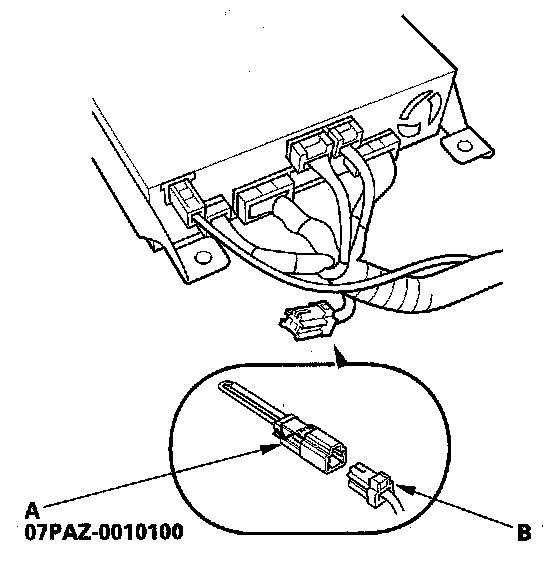

Forced Starting of Display
Forced Starting of DisplaySpecial Tools Required
SCS Service Connector 07PAZ-0010100
1. Turn the ignition switch OFF.

2. Connect the SCS service connector (A) to the navigation service connector (B) located behind the navigation unit.
3. Turn the ignition switch ON (II).
4. Check that the diagnosis menu for the picture diagnosis starts up, and then changes to the system link menu.
NOTE: If the display fails to display the system link screen, refer to no picture is displayed.